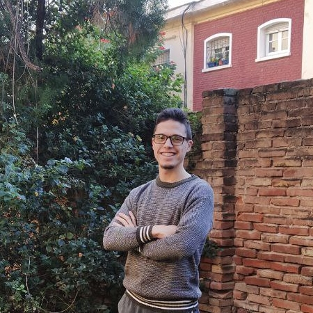

Bienvenidos a mi blog personal, donde encontraran la información mas relevante sobre mi carrera profesional y vida personal. El mismo lo realice con mucha felicidad y aplicando conocimientos adquiridos en los ultimos tiempos. Espero que les guste el contenido y disfruten de su estadia por el sitio 😀
Este título de Desarrollador Web fue lo que buscaba. Si bien entre sabiendo un par de conceptos y prácticas, sabia que requeria de alguien que me evalue y me de "feedback" para crecer. Este título conseguido fue la prueba que realmente mi mente necesitaba. En esta etapa perfeccione tecnologías como Sass y NPM. Además conocí Bootstrap, con el cual me amigue muy bien y pude desarrollar mi proyecto final.
Hoy en día sigo cursando aca, para convertirme en un Desarrollador Full Stack a comienzos del año 2022.
En la academia Platzi empecé en Agosto de 2020, adquiriendo la base de un 90% de las tecnologías que hoy implemento día a día en mis proyectos. Tuve mi segundo acercamiento a un lenguaje de programación como Javascript. En platzi aprendí mucho sobre como estudiar autodidactamente, aunque decidi buscar una alternativa como Coderhouse para ser evaluado mas en profundidad. Todos mis títulos de Platzi podras verlos entrando a mi LinkedIn
Uno se preguntará ¿Las lenguas interfieren en el Desarrollo Web? ; y la respuesta es afirmativa. Por ese motivo decidí colocar mis aprendizajes secundarios en esta sección. En estos aprendi multiples idiomas, pero quiero remarcar la importancia de tener una base en el idioma ingles, el cual abre muchas puertas. El mismo lo voy a estar perfeccionando a lo largo del 2022.